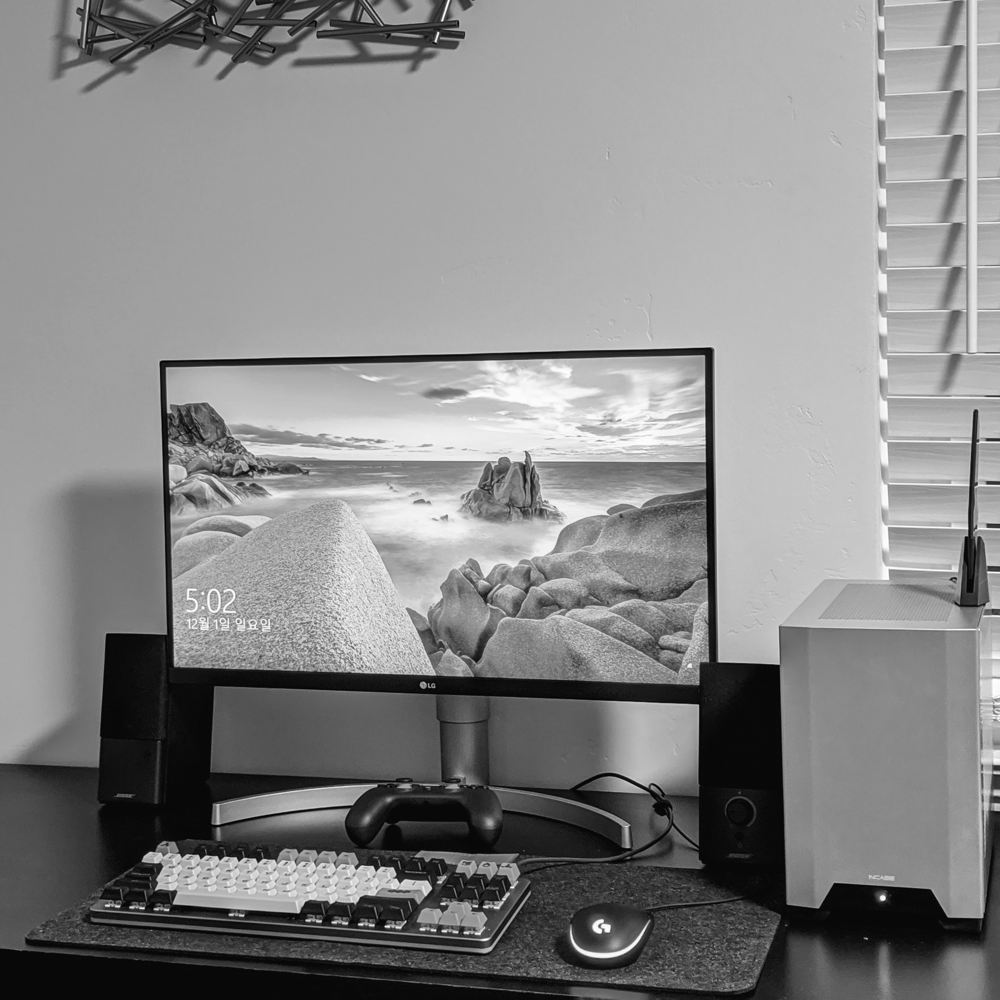
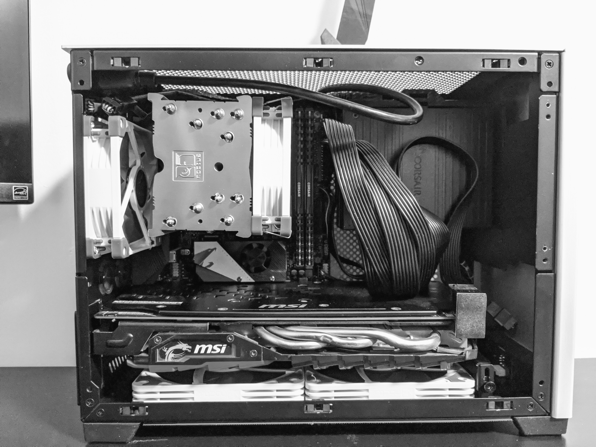

Ryzen 3600 Desktop
큰 아이에게 마인크래프트 자바 에디션을 위해 맥북을 넘겨주고, 회사 랩탑을 개인용으로 같이 사용한 지 꽤 되었네요. 새로운 회사에 입사 후 집에 Kensington Thunderbolt 3 docking station을 쓰기 시작하면서 부터였을 테니 1년은 넘긴 듯 하네요. 그러다 어느 때부터인가 소셜네트워크가 이상 동작 감지로 블럭이 되더군요. 운전면허증 사본으로 몇번 블럭 풀고 나니, 더이상은 회사 랩탑을 못쓰겠더라구요. 아무래도 제 개인 소셜 브라우징까지 히스토리에 남을 걸 생각하니, 이대론 안되겠다 싶어서 10년만에 데스크탑을 조립했네요.
10년 전엔 당연히 인텔 CPU를 써야했는데 이젠 당연히 AMD CPU를 써야 하는 분위기가 되었네요. 그 사이에 AMD가 Zen 아키텍쳐로 인텔을 많이 따라 잡은 듯 합니다. 이젠 따라 잡은 것을 넘어서 인텔이 보안패치를 하고 나면 많이 밀리는 형국이네요.
각설하고, 이번에 라이젠 데스크탑을 맞췄는데, 사용된 부품은 아래와 같아요.

-
CPU: Ryzen 3600을 갈지 3700x를 갈지 고민을 했는데, 큰 부하 걸릴만한 프로그램을 돌릴 일이 그다지 많지 않아서 3600으로 갔네요. 나중에 4000시리즈 나오면 AM4소켓 마지막 버전일테니 그때 4700x를 고민해 볼 생각입니다.
-
Motherboard
이건 좀 우여곡절이 있네요. 처음엔 어차피 3600갈테니 저렴한 걸로 가자고 생각해서 B450 칩셋을 사용한 ITX 보드를 구입했네요. B450 ITX는 MSI가 유명하다길래 구입했는데, 막상 설치해보고나니 부팅이 4분이 걸리고, BIOS 업데이트는 우여곡절끝에 하긴 했는데, 그 뒤로 BIOS 셋업화면도 안들어가지는 등 이런 저런 안정성이 떨어지는 문제들이 보이더라구요. 그래서 환불하고 X570 ITX 보드로 넘어갔네요.
-
Power Supply Unit: 이건 두말 할 필요없이 커세어 SF600입니다. 선택의 여지가 없죠.
-
GPU: 그래픽카드는 지인에게 넘겨받은 마이닝 그래픽카드 RX580이 있어서 그걸 사용했네요.
-
CPU Cooler: 지금 사용하고 있는 NCase M1에 가장 효율이 좋은 공냉식 쿨러가 녹투아 U9S라고 하길래 아무 생각없이 질렀네요.
-
Case: 사실 제일 먼저 구입한게 케이스인데, [NCaseM1][ext:ncasem1] 이라고 ITX 폼팩터로 나온 꽤 입소문을 타는 케이스를 구입했네요. V6 버전이 때마침 공구 주문을 받길래 바로 질렀네요.
내부 구조가 정말 잘 짜여져 있어서 꽤 큰 그래픽카드도 들어가고, 작은 ITX 케이스임에도 쿨링 성능이 미들 타워 못지 않게 잘 나온다고 합니다. 제가 세팅을 다 마치고 풀로드 테스트를 해도 63~65도 언저리로 CPU 온도가 나오는 것을 보면, 정말 괜찮은 것 같네요.
이것과 Loque Ghost S1 케이스 중 고민했는데, NCase M1이 무난한 것 같네요. S1 케이스는 부피가 정말 작아서 쿨러도 성능이 조금 더 낮은 것을 써야하고 그래픽카드도 라이저를 이용해서 연결해야 하는 등 좀 제약이 많습니다.
-
Storage
SATA Express 호환 SSD가 있어서 이것을 사용했는데, 이게 부팅을 느리게 만드는 요인이더군요. 어댑터를 사용해서 케이스도 닫히질 않고 해서 결국 삼성 970 EVO 를 구입했네요. 바꾸고 나니 부팅도 10초 내외로 되고 만족합니다. 메인보드도 M.2를 두곳에 장착할 수 있어서, 다음에 SSD 가격이 좀 더 떨어지면, 2TB짜리 하나 데이터 저장용으로 추가하면 충분할 것 같네요.
예전엔 SATA cable, SATA power cable을 모두 연결했어야 했는데, M.2로 보드에 직접 장착하게 되면서 케이블 관리가 무척이나 편해졌네요. ITX 케이스이다 보니 케이블 정리가 정말 곤역인데, 이것 덕분에 그나마 조금은 나아진 듯 합니다. 그래도 아래 이미지에서 보다시피, 전원 케이블 연결은 막막할 정도네요 :)

총 평은, 정말 더할 나위 없이 좋다... 로 요약가능하겠네요. 성능도 이정도면 홈페이지 작업, 간단한 사진편집하기 충분하고, 녹투아 팬 조합으로 소음도 거의 없다시피 해서 아주 만족하면서 사용하고 있네요.
자금이 좀 더 허락하면 그래픽카드를 업그레이드 해서 내년에 나올 플라이트시뮬레이터를 좀 대비하고, 파워 케이블을 슬리빙된 케이블로 짧게 만들어서 내부에 감아서 연결해 둔 전원선을 정리하면 더 완벽할 것 같네요.